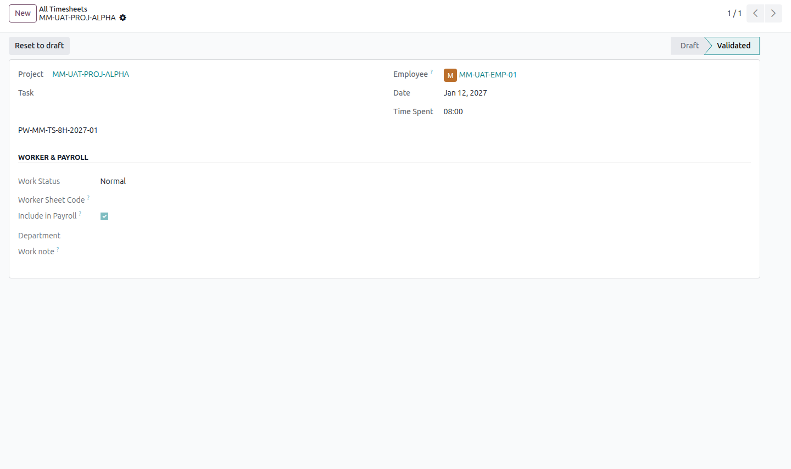
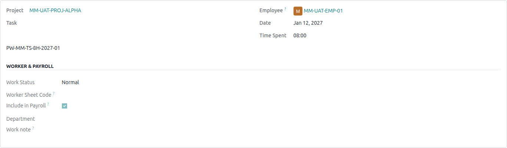
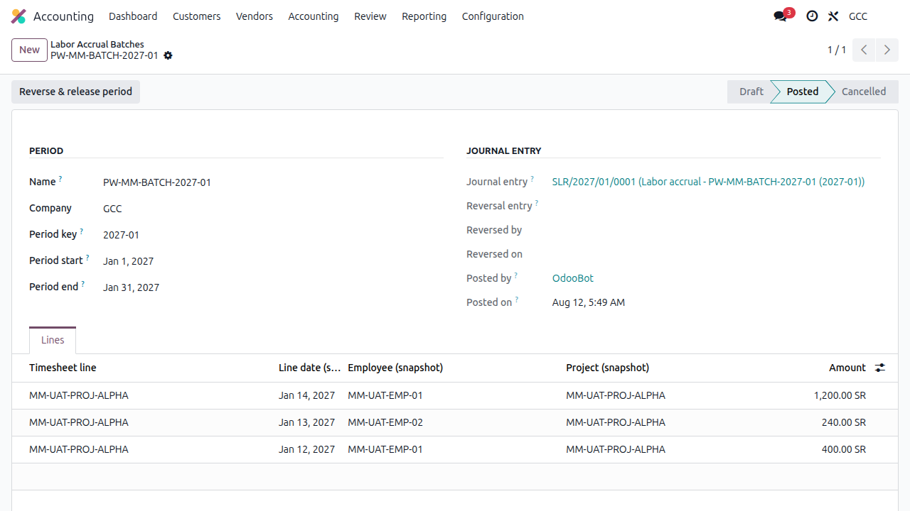
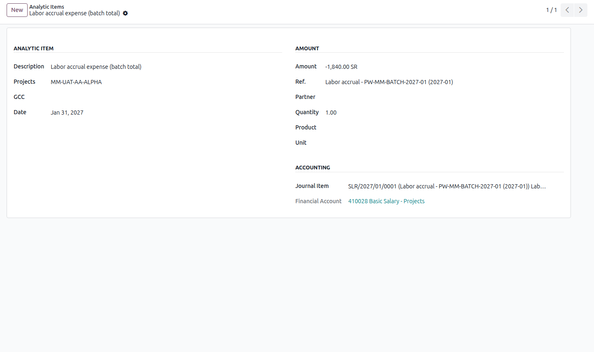
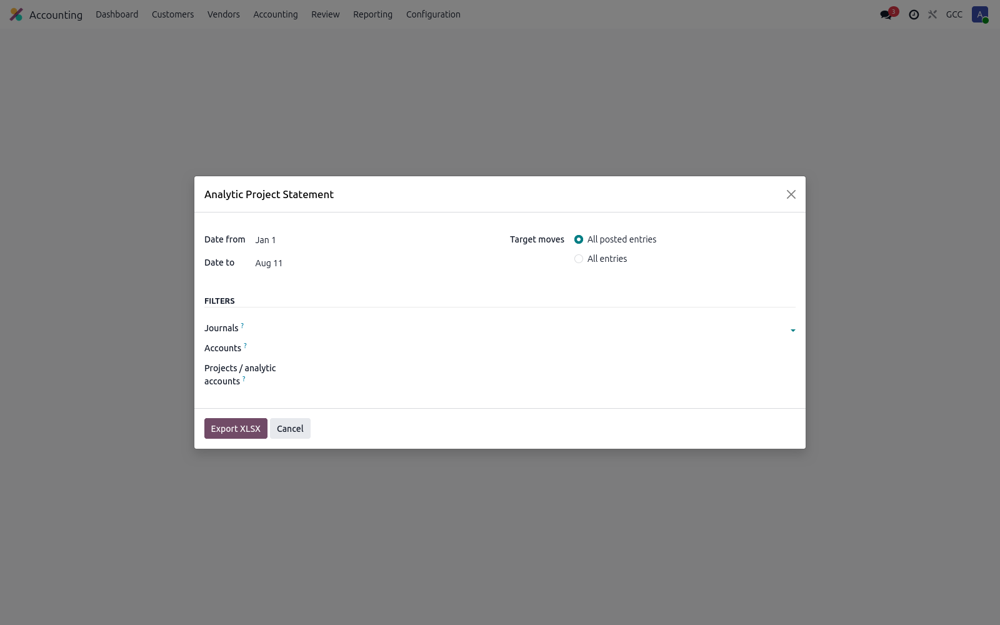
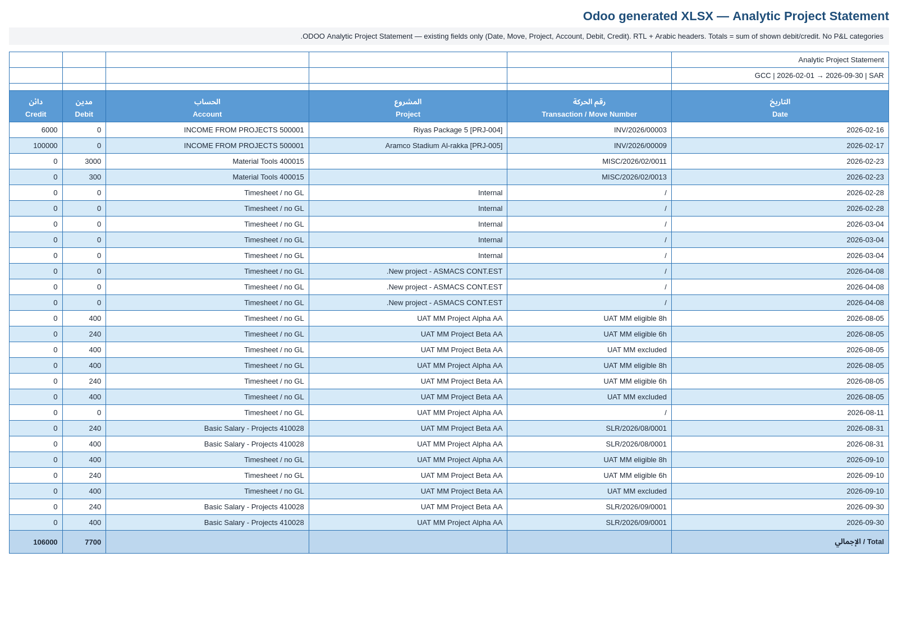

1
Visual end-to-end flow
Timesheet → payroll flag → labor batch → journal → GL-backed analytic → statement → XLSX.

8h validated
Eligible
Normals only Posted SLR
Posted SLR
Financial Account
AAL-primary
Style only